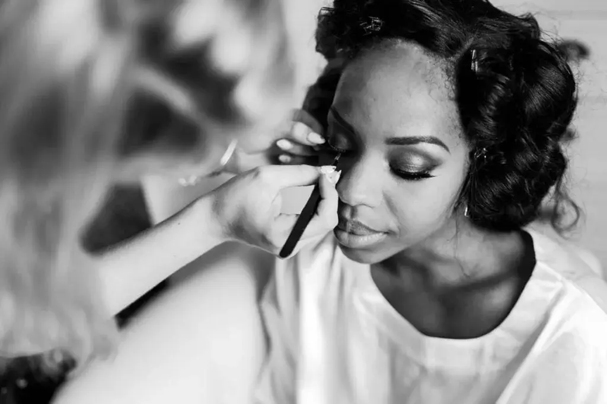
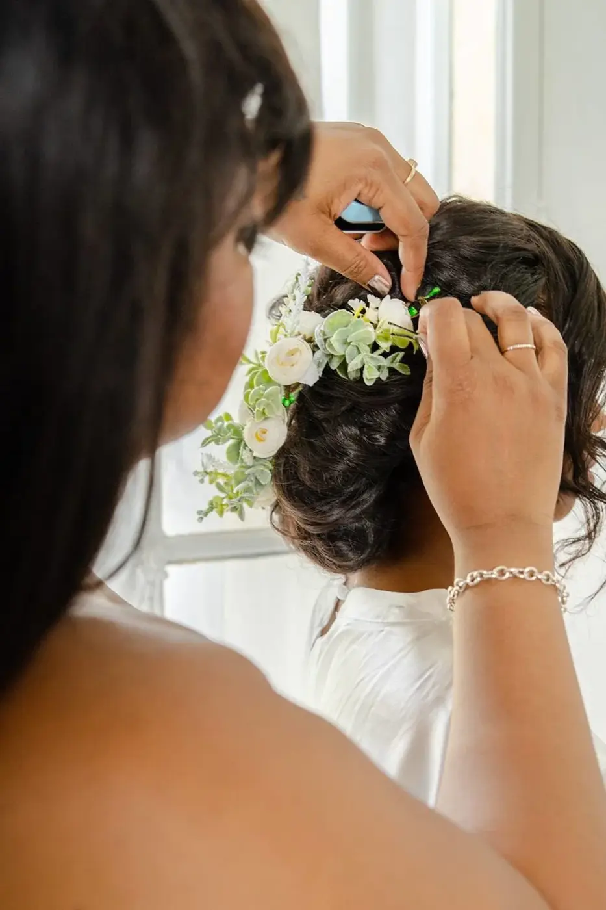
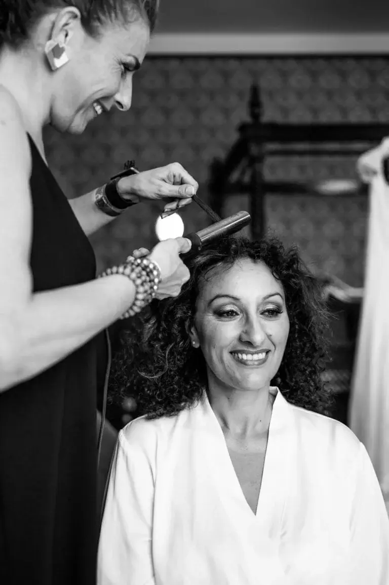

Mise en beauté de mariage
C’est arrivé, vous avez dit avez dit oui à l’homme de votre vie et vous êtes sur le point de vous marier ! Alors vous voulez être resplendissante pour ce jour si spécial ? Pour vous inspirer, voici quelques idées de mise en beauté de mariage à Bordeaux.

Il ne fait aucun doute que vous êtes déjà la plus belle aux yeux de votre cher et tendre, mais vous voulez certainement marquer le coup et sortir de l’ordinaire avec une mise en beauté de mariage à couper le souffle. C’est normal, pour un jour si unique, on sort les pinceaux pour une transformation digne des plateaux de cinéma ! A Bordeaux, il existe beaucoup de coiffeurs et de maquilleurs professionnels qui pourront vous ravir et répondre à toutes vos envies.
Avant tout, sachez que c’est votre jour, et pour votre mise en beauté, comme pour votre robe, votre décoration et plus globalement tout ce qui entoure le jour de votre mariage, c’est vous qui choisissez ! En effet, vous êtes la reine de la soirée, vous pouvez oser et mettre un brin de fantaisie à votre routine beauté. Mais avant tout, si vous souhaitez que tout soit en cohérence, recentrez-vous sur votre thème. Mariage bohème dans les bois autour de Bordeaux ? Pourquoi pas opter pour un maquillage naturel et nude dans des tons chauds et un chignon lâché parsemé de petites fleurs ! Un mariage romantique dans un château bordelais ? Osez la sophistication pour un look de princesse avec un maquillage plus prononcé et un chignon travaillé ! Ou alors un mariage à la plage sur le Bassin d’Arcachon ? Laissez votre crinière flotter au gré du vent avec un wavy flou et un teint chaud et lumineux ! Il y a d’innombrables combinaisons possibles, faites-vous plaisir et explorez de nouvelles choses !

Lors des mariages que j’ai eu l’occasion d’organiser, j’ai souvent pu conseiller les mariées sur cet aspect. En tant que wedding planner basée à Bordeaux, j’ai une bonne connaissance des dernières tendances de mise en beauté de mariage et également des prestataires qualifiés en fonction de votre type de peau et de cheveux. Je travaille avec des professionnels de la beauté talentueux et je saurais vous orienter vers celui ou celle qui correspondra le mieux à vos envies et à votre style.
Alors, si vous avez besoin d’aide pour choisir la mise en beauté qui vous correspondra le mieux ou pour vous orienter vers des coiffeurs et maquilleurs de mariage de qualité à Bordeaux, n’hésitez pas à faire appel à moi ! Je suis organisatrice de mariage, donc si vous avez aussi besoin d’un coup de pouce pour les préparatifs de votre mariage et la coordination du jour J, je serais aussi à même de vous conseiller !




Lovely Day Event c'est plusieurs types de prestations
L'organisation de mariage
Je vais intervenir sur toutes les étapes de vos préparatifs et vous guider dans vos choix. Je suis force de proposition pour que votre mariage ne ressemble qu’à vous.
Décoration de mariage
Créative et passionnée, je suis certifiée Wedding Designer et je conçois une ambiance scénographique qui correspond au thème de votre mariage.
Coordination le jour J
Je serai le chef d’orchestre pour gérer les différents prestataires, la mise en place de votre décoration et le déroulement de cette belle journée.